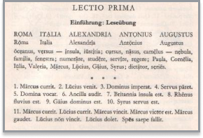
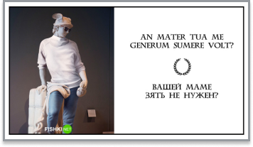

Вступление
Латынь - мёртвый язык, это важно знать. Если хотите его учить, будьте уверены,
что с носителями вам поболтать не удасться - они все мертвы уже много сотен лет.
Также латынь - язык сомнительно полезный, если вы не хотите посвятить
себя истории античности или медицине.
Однако, раз вы зашли на этот сайт, у вас есть свои мотивы.
Грамматика
Латынь похожа на многие языки, на которых говорят в Европе и Индии (“индо-европейские”, верно).
В латыни есть падежи, как в русском, однако алфавит у латыни английский (ну, латинский, конечно же).
Если вы хотите читать тексты всяких там Цицеронов и Овидиев, вам надо знать грамматику.
Так как я - не школьный препод, я не заставляю вас заучивать таблицы спряжений и склонений.
Распечатайте и пользуйтесь прямо во время работы. С течением времени вы всё равно их запомните.
/ссылка/
Лексика
Как и во всех языках, в латыни есть слова.
Более того, эти слова можно перевести.
Лексических диктантов не будет, не волнуйтесь.
Если не знаете чего-то, обращайтесь к словарю и не парьтесь.
/ссылка/
Пробный текст
Вот текст, с которого я начинал.
Попробуйте перевести его, используя данные по ссылкам выше.

Ianua Nova, pt.1, взял из гугл картинок,
так что про авторские права не спрашивайте
Получилось? Молодец.
“Что делать дальше, если я хочу учить латынь?”
Купите или скачайте учебник “Ianua nova” -
он есть в русском варианте, если хорошо поискать.
Там четыре части, и там неплохие тексты. Когда попрактикуетесь,
читайте Цезаря, потом Овидия, что хотите, в общем. Настоятельно
советую почитать эпиграммы - оно того стоит, поверьте.
Вот вам мемесов про латынь для поднятия боевого духа:

(1) Если придираться, основное значение слова “puer” -
просто мальчик.
Но я очень сомневаюсь, что в солидных словарях
есть перевод слова “пацан”.
(2) А вот это жиза.
Ещё интереснее ситуация с древнегреческим - “не только у
вселенной нет границ, но и у времени”,
“не доверяй словам новых друзей”.
И это всё в первом упражнении!
(3) Пацанские цитатки на латыни - отдельный вид искусства.
Тут, кстати, не очень точный перевод, да и латынь эта поздняя.
(4) Если вы хотите понтоваться - латынь для вас.
Хотя возможно из-за изучения латыни вас будут считать странным,
ничего не обещаю.